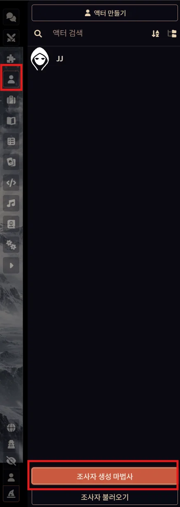
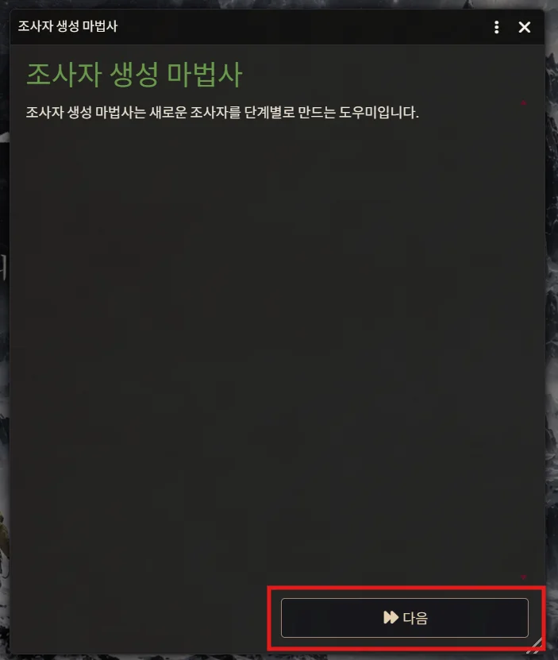
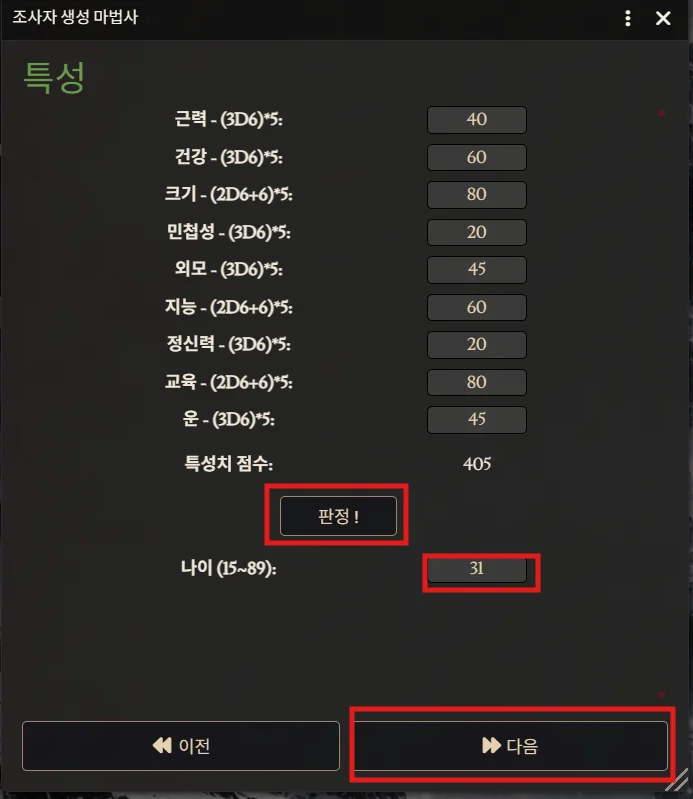
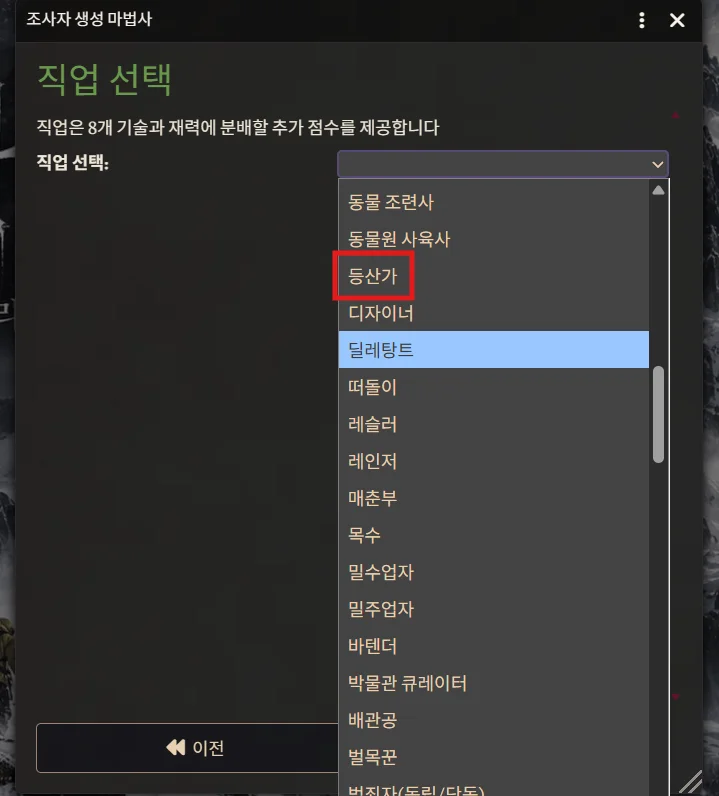
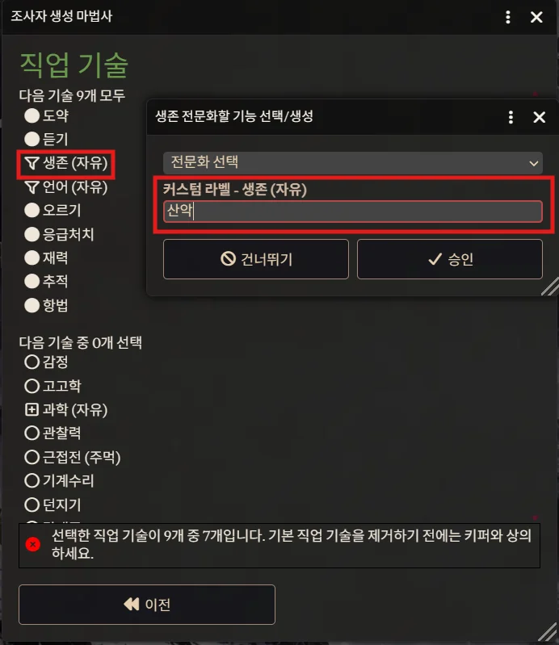
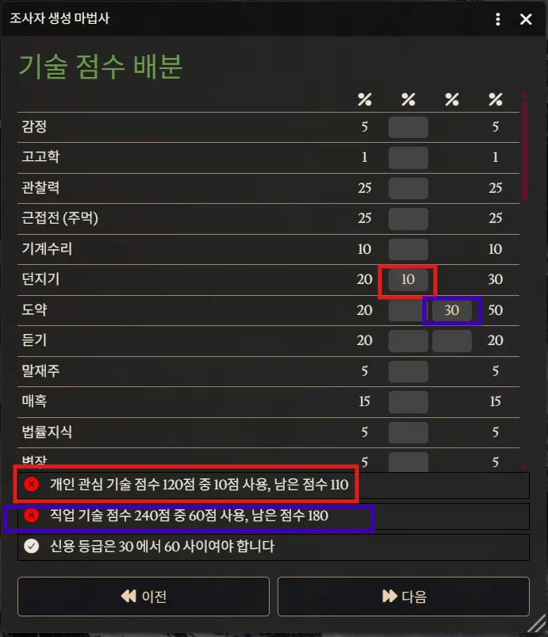
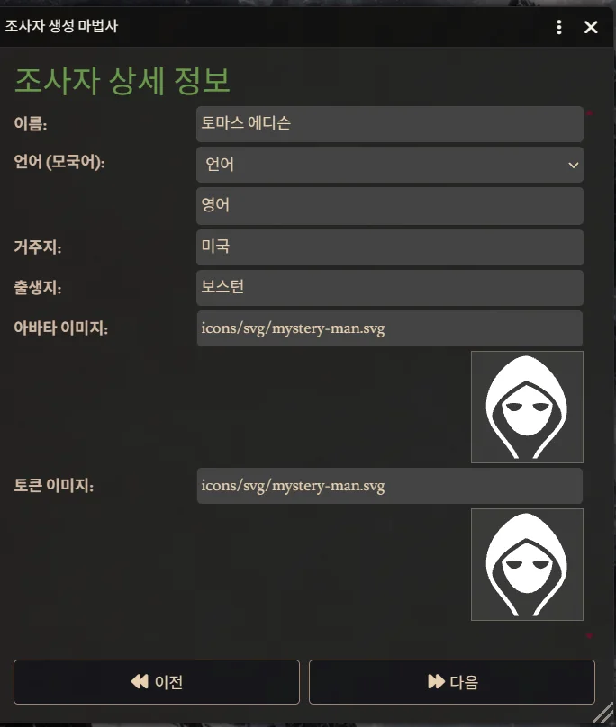
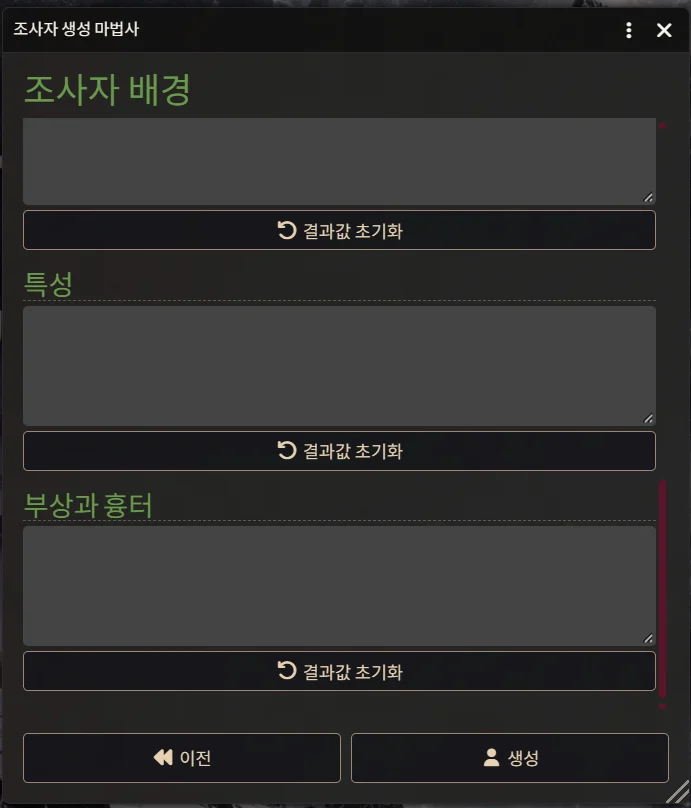

1
조사자 생성 마법사 실행
우측 사이드바 상단의 [액터(인물 아이콘)] 탭에 들어간 뒤, 하단에 위치한 [조사자 생성 마법사] 버튼을 클릭해 줍니다.

조사자 생성 마법사를 사용하여 손쉽게 탐사자 시트를 작성하는 단계별 안내서입니다.
우측 사이드바 상단의 [액터(인물 아이콘)] 탭에 들어간 뒤, 하단에 위치한 [조사자 생성 마법사] 버튼을 클릭해 줍니다.

조사자 생성 마법사 시작 화면 팝업이 뜨면 하단의 [다음] 버튼을 클릭하여 진행합니다.

[판정 !] 버튼을 눌러 주사위 굴림으로 기본 특성치를 결정합니다. 마음에 드는 결과가 나올 때까지 원하시는 만큼 굴려주세요.

드롭다운 메뉴를 열어 캐릭터 컨셉에 맞추어 원하는 직업을 선택해 줍니다. 자유롭게 선택하셔도 무관합니다.

직업 기술 9개를 지정합니다. 목록 옆에 (자유)라고 적혀 있는 기능은 클릭하여 팝업창에서 커스텀 라벨(세부 항목 예: 산악 등)을 입력하고 [승인]을 눌러야 합니다.
그 후 하단의 '다음 기술 중 선택'에서 제시하는 숫자만큼 원하는 직업 기능을 마저 선택합니다. (제시 숫자가 0개일 수도 있습니다.)

보유한 수치 점수를 각 기능에 배분합니다.

이름, 모국어, 거주지, 출생지 등 상세 인적사항을 입력합니다.

조사자의 배경, 특성, 흉터 등 백스토리 항목을 채워준 후 하단의 [생성] 버튼을 누르면 모든 과정이 완료됩니다!
(※ 백스토리는 플레이 중 채워나가도 되므로 굳이 처음부터 너무 상세히 적지 않으셔도 괜찮습니다.)
